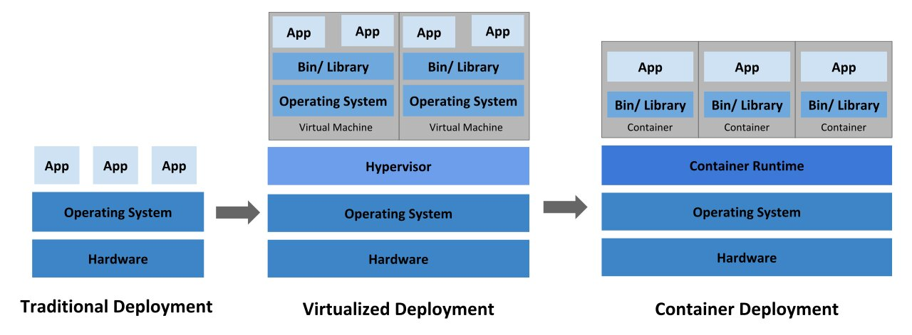
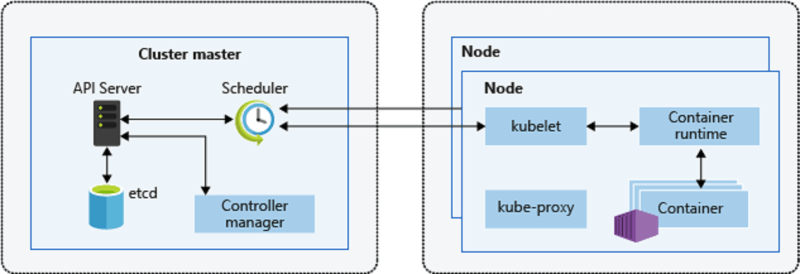
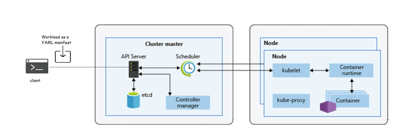

Kubernetes – Introduction
Overview of Containers

Why do we need Kubernetes
Question or Concerns about containers
- Containers are a wonderful way of bundling and running our applications, But are they production ready?
- What would happen if the container or the Docker Host goes down?
- How to make containers available 24*7 ?
- How to handle loads during peak time for the applications ?
- How to replace containers without having downtime with new Docker Image based containers ?
- How to monitor containers?
Solution to above Questions or Concerns
Wouldn’t it be good if there is some system which can help for handling all the questions/concerns raised in the above section. That is exactly what Kubernetes does.
- Scaling requirements
- failover
- deployment patterns
- Service Discovery & Load Balancing
- Storage Orchestration
- Automated rollouts and rollbacks
- Automated bin packing
- Self-Healing
- Secret & Configuration Management
- Kubernetes is not only for the open source community embraced containers, It is deeply embraced by the Cloud Providers.
- Amazon Web Service offers Elastic Kubernetes Services(EKS)
- Google Cloud platform offers Google Kubernetes Engine(GKE)
- Microsoft Azure offers Azure Kubernetes Services(AKS)
What is Kubernetes
- Kubernetes is a platform that manages container-based applications, their networking and storage components.
- In Kubernetes, we focus on the application workloads rather than the underlying infrastructure.
- Kubernetes provides a declarative approach to deployments, backed by a rich set of APIs for management operations.
- Cluster: Cluster is a collection of compute, storage and networking resources that Kubernetes uses to run workloads.
- Node: It is a single host. Now we can put the cluster as a collection of nodes.
- Kubernetes has two kinds of Nodes
- Provides core Kubernetes Services and orchestration to application workloads
- run your application workloads
Kubernetes Cluster Architecture

What would be our approach with workloads in Kubernetes?
- We would be describing our application as a YAML manifest and pass it to Kubernetes master from some client, and Cluster Master does the rest.
